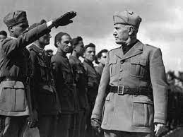
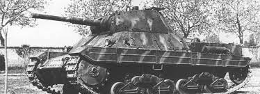
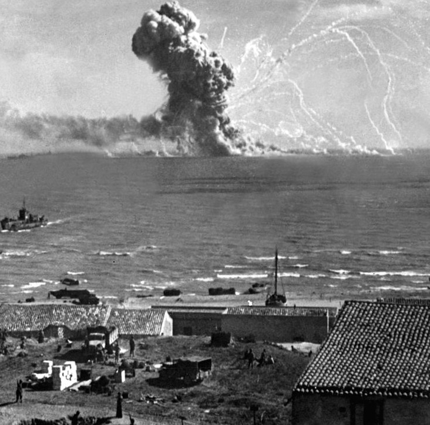
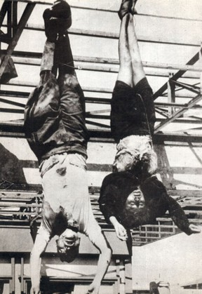
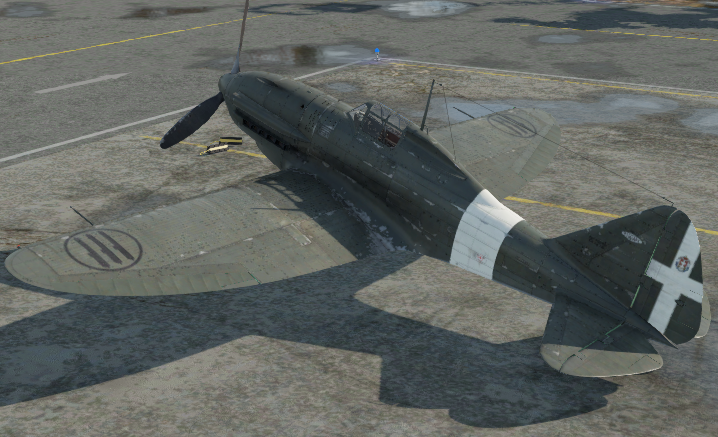
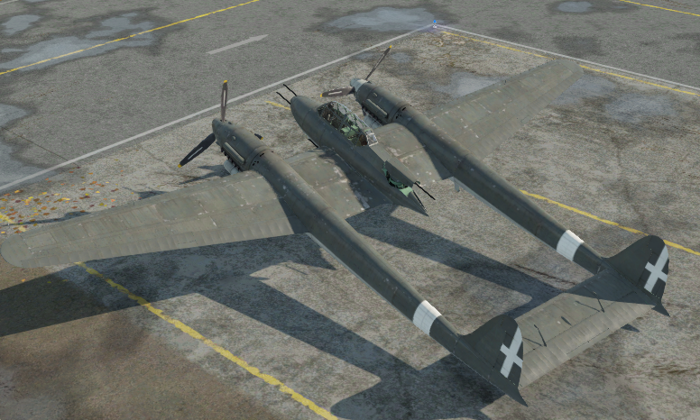
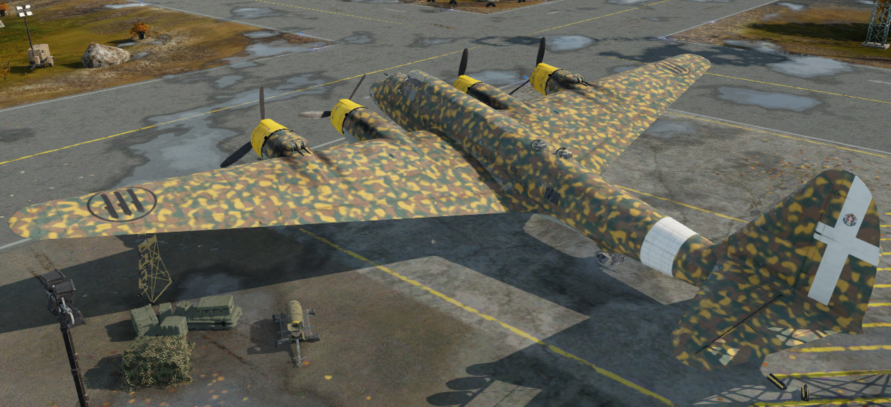
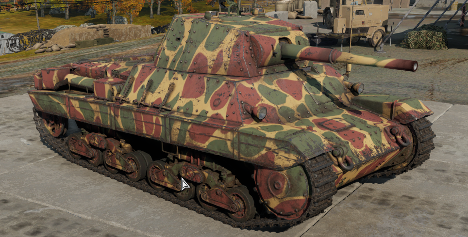
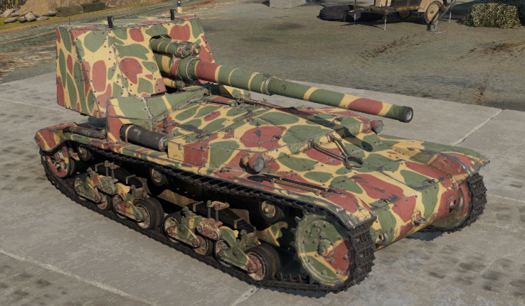

Osa
Aliance
Jako Osa Berlín–Řím, později Osa Berlín–Řím–Tokio, zkráceně Fašistická osa nebo jen Osa, se označovalo vojensko-politické uskupení nacistického Německa, Itálie a následně Japonska. Toto spojenectví bylo ustanoveno německo-italskou smlouvou z října 1936, která určovala německé a italské sféry vlivu v Evropě. Na tuto základní smlouvu navázal tzv. Ocelový pakt z května 1939, ve kterém se oba spojenci dohodli na společném postupu v případě války v Evropě a na s tím související ekonomické a vojenské výpomoci. Ještě v roce 1936 se k Ose přidalo Japonsko, které s Německem uzavřelo Pakt proti Kominterně (tj. spojenectví namířené proti Komunistické internacionále a potažmo proti Sovětskému svazu). Dne 27. září 1940 byl v Berlíně v rámci Osy uzavřen Pakt tří, který potvrzoval spojenectví fašistického režimu v Itálii, nacistického v Německu a militaristického v Japonsku. K Paktu tří se následně připojily německé satelity bojující na straně Osy.
Afrika
Druhá italsko-etiopská válka
V 5.00 hodin ráno 3. října 1935 překročily italské a eritrejské síly soustředěné do tří armádních sborů řeku Mareb a bez vyhlášení války vtrhly do etiopského vnitrozemí. Italové bez větších potíží zatlačovali slabou clonu etiopských pohraničních sil a více než s odporem nepřítele zápasili s členitým terénem V průsmyku Dembeguina se Etiopanům podařilo zaskočit kolonu eritrejské pěchoty a oddíl doprovodných tančíku L3 pod velením majora Crinitiho, který prakticky rozprášili a donutili k ústupu, což bylo sice malé vítězství, ale povzbudilo to morálku císařských oddílu, deprimovaným pádem Makaly a zradou velitele Gugsy. Za této situaci se maršál Badoglio obrátil na Mussoliniho s žádosti nasadit chemické zbraně a získal souhlas.
Začátkem dubna 1936 již nikdo z císařova okolí nemohl pochybovat, že je válka prohraná. Císař rozhodl, že se vláda přesune do města Gora na západě země u hranic s britským Súdánem. Zároveň jmenoval Imru Haile Selassieho regentem po dobu, kdy bude v exilu. 2. května 1936 vyjel císař ve svém vlaku směrem na Džibuti, hlavní město francouzského Somálska. Poté, co císař opouští město, dochází v celé Addis Abebě k nepokojům a v rabování. Dav vyrabuje císařský palác a bere útokem ministerstvo financí, kde je umístěn zbytek zlatých rezerv, které se nestihly odvézt. Několik úředníků, kteří se snažili odrazit útok davu kulometem, bylo zlynčováno.
Válka v Severní Africe
13. září 1940 zahájila Italská vojska útok na Egypt s cílem ovládnout Suezský průplav. Velitelem italské ofenzívy byl maršál Rodolfo Graziani. Jelikož se Velká Británie roku 1936 zavázala k obraně Egypta, Britové pod vedením generála Wavella zahájili rozsáhlou ofenzivu, při níž 11. prosince znovudobyly Egyptské Sídí el-Barrání. 22. ledna 1941 dobyly kyrénský Tobrúk. 8. února 1941 selhal u El Agheily poslední pokus o zvrácení Britského postupu. Britské síly zničily 10. italskou armádu a zajaly 130 000 zajatců.
Itálie na drtivou porážku reagovala vysláním obrněných motorizovaných jednotek do Afriky. Maršál Graziani musel rezignovat, novým velitelem italských vojsk se stal Italo Gariboldi.
Britové i Američani pokračovali v náporu na německé pozice . Již 17. ledna obnovila 8. armáda svoji ofenzívu v Libyi, 23. ledna 1943 Britové obsadili Tripolis a 8. února se dostali na Tuniské hranice. Dne 25. února zahájil Rommel ofenzívu, která byla přes počáteční úspěchy 28. února zastavena. Dne 9. března 1943 byl Erwin Rommel pro neshody s Hitlerem o dalším postupu poslán na měsíční dovolenou, novým velitelem se stal generál Hans-Jürgen Arnim. Dne 27. března Britové prolomili Marethskou linii, 24. dubna začala spojenecká ofenziva v Tunisku. Po útoku na Tunisko kapitulovaly (13. května 1943) poslední německo-italské jednotky.
Sicílie
Operace Husky
Hlavním cílem Spojenců bylo dobytí přístavu Messina v severovýchodním cípu ostrova přímo proti italské pevnině. Obsazení Mesiny bylo důležité zvláště proto, že tudy proudily na Sicílii veškeré zásoby nepřítele. Kdyby Spojenci obsadili Mesinu, stala by se situace italských a německých vojsk na Sicílii zoufalou. To si však velmi dobře uvědomoval i nepřítel a tak své nejlepší jednotky vrhl proti Montgomeryho postupu na východě. Montgomeryho 8. armádě bránil v rychlém postupu hlavně terén. Celý severovýchodní výběžek je totiž kryt masivem sopky Etny a postup byl tudíž možný jen podél ramene sopky. Poté, co 8. britská armáda bez problémů obsadila přístav Syrakusy, zahájila postup podél pobřeží směrem na Catanii. Odpor nepřítele zesiloval s každým dalším kilometrem postupu.
Postup britské 8. armády byl nakonec zcela zastaven na catanské pláni naproti Etně a vyhlídky na proniknutí nepřátelskou obranou byly mizivé. Mezitím americká 7. armáda z jihu rychle postupovala do středu ostrova. Levé křídlo 7. armády po 12 dnech sicilského tažení obsadilo město Palermo. Úspěch Spojenců byl obrovský, po dvou týdnech tažení byla vyčištěna od nepřátelských vojsk téměř celá Sicílie, nepříteli však stále zbýval přístav Mesina. Bojová morálka italských a německých vojsk však byla událostmi posledních týdnů silně podlomena, což umožnilo Pattonovi rychlý postup na východ a pomoc britské 8. armádě. Oběma válečným uskupením Spojenců však stále stála v cestě sopka Etna. Zde se rychlý postup spojeneckých vojsk velmi zpomalil. Ve chvíli, kdy Němci poznali, že prohráli, urychleně zahájili z Mesiny evakuaci svých vojsk. 17. srpna pronikla do Mesiny americká 3. divize a brzy poté dorazily i některé jednotky britské 8. armády. Ještě téhož dne byly zničeny poslední zbytky nepřátelských vojsk. Jedinou věcí, která byla celé operaci „Husky“ vyčítána, byl příliš pomalý postup spojeneckých vojsk v poslední fázi tažení.
Rozpad
Invaze do Itálie
3. září 1943 ráno se přes Messinský průliv začaly přepravovat 5. britská a 1. kanadská divize 8. britské armády pod velením Bernarda Montgomeryho. Po hladkém vylodění spojenecké jednotky téměř beze ztrát obsadily Reggio di Calabria a okamžitě zahájily postup na sever. 9. září 1943 se v okolí Salerna začala vyloďovat 5. americká armáda generála Marka Clarka. Začátkem dubna 1945 zahájili Spojenci ofenzívu, během níž překročili řeku Pád a dobyli severoitalská města. Nedlouho nato dopadli italští partyzáni prchajícího Mussoliniho, jenž byl 28. dubna zastřelen. V Itálii válka oficiálně skončila kapitulací zdejších německých sil 2. května.
Poprava Mussoliniho
Když už bylo jasné, že nově vytvořená Italská republika nebude mít dlouhého trvání, uprchl do Milána, odkud se už tehdy spěšně stahovala německá vojska. Zde se rozhodl vyjednávat o kapitulaci. 25. dubna 1945 opustil v doprovodu své milenky Clary Petacci bombardovaný Milán a v koloně aut prchal do Coma. Odtud pokračovala kolona směrem na Švýcarsko. Pak se rozhodl připojit se k německému oddílu protiletecké obrany a uprchnout pod jeho ochranou do Innsbrucku, ale oddíl byl zastaven 52. partyzánskou brigádou a všichni Italové dostali příkaz zůstat na místě, zatímco Němci jeli dál. Mussolini si tedy oblékl německou uniformu a pokračoval v cestě do Donga, kde byla německá auta prohlédnuta a Mussolini tak byl nakonec objeven a zatčen.
V té době už měli členové Národního osvobozovacího výboru severní Itálie o jeho dalším osudu jasno. Walter Audisio, antifašistický bojovník známý jako plukovník Valerio, dostal příkaz jej popravit. 28. dubna 1945 vtrhl Valerio do Mussoliniho ložnice v selském stavení u Bonzaniga a tvrdil, že chce Mussolinimu a jeho milence pomoci k útěku. Společně pak odjeli autem k vile Belmonte, kde s Clarou Petacci opustili auto a následně byli zastřeleni. Jejich mrtvá těla byla převezena do Azzony a 29. dubna pověšena hlavou dolů na nosnících rozbombardované čerpací stanice na Piazzale Loreto v Miláně. Zpráva o jeho smrti a naložení s jeho mrtvým tělem mělo vliv na rozhodnutí Adolfa Hitlera spáchat sebevraždu .
Letectvo
Re.2001

Re.2001 byl jednomotorový stíhač který letěl rychlostí až 523km/h
Historie
Roku 1939 bylo rozhodnuto adaptovat kvalitní trup letadla Reggiane Re.2000 pro výkonnější, invertní kapalinou chlazený řadový dvanáctiválcový motor RA-1000RC-41/Ia, což byl v Itálii licenčně vyráběný Daimler-Benz DB-601 A-1 o výkonu 1175 k. Zástavba proběhla úspěšně a stroj zalétaný na letišti v červnu 1940 dosahoval rychlosti 563 km/h. V únoru 1941 se rozběhla výroba deseti předsériových letounů. Zdárný průběh zkoušek však přerušila havárie druhého prototypu, při které zahynul pilot Pietro Scapinelli. Rozestavěné trupy typu Reggiane Re.2001 byly použity pro některé nové varianty. Poslední vyráběnou verzí byl Re.2001CN , noční stíhací letoun s výzbrojí dvěma kanóny Mauser MG 151/20 ráže 20 mm. Stroje s bohatším navigačním a komunikačním vybavením byly dodávány mezi březnem a červencem 1943. Vznikl také jeden Re.2001H jako bitevní protitankový letoun. Po válce zůstalo ve službě pět Re.2001 – dva u spojovací jednotky v Římě a tři u Meteorologického výzkumného střediska v Benátkách-Lidu. Celkem bylo postaveno 243 kusů.
SM.91

SM.91 byl dvoumotorový dvouposádkový bitevník který letěl rychlostí až 561km/h
Historie
V červenci 1942 si Regia Aeronautica vyžádala návrhy nového letounu poháněného německým motorem DB 605, který by byl schopen letět rychlostí 620 km/h a měl dolet 1 600 km. Výzbroj mělo tvořit šest kanonů MG 151 v přídi a křídlech a 12,7mm kulomet Breda-SAFAT jako obranná zbraň. Měl by mít pumový náklad 800 kg. V té chvíli požadavek na dálkový stíhací letoun zabil stále vyvíjený SM.88 a byl schválen SM.91, větší, těžší a modernější konstrukce. Dva motory DB 605 dávaly celkový výkon 2 950 k. Maximální rychlost letounu 585 km/h byla vyšší než u SM.88. V přídi byly tři 20mm kulomety MG 151. Další dva byly namontovány v křídlech, blízko trupu. Další kulomet byl určen pro zadního střelce. Tento letoun byl testován 10. července 1944, ale později v roce byl zničen spojeneckými bombardéry.
P.108B

P.108B byl čtyřmotorový osmiposádkový dálkový bombardér který letěl rychlostí až 401km/h
Historie
Bombardéry P.108B byly do služby zařazeny roku 1941. Jako jediná jimi byla vyzbrojena 274. dálková bombardovací letka Regia Aeronautica, vytvořená 1. července 1942 ve Folignu. Dne 28. června 1942 čtyři letouny poprvé bombardovaly Gibraltar, vrátil se ale jen jeden, protože ostatní po vyčerpání paliva přistály ve Španělsku. Následovalo několik dalších náletů na Gibraltar a jiné cíle ve Středomoří. Celkem byly P.108B nasazeny do 29 akcí, přičemž 13 jich bylo ztraceno . Bojové nasazení bombardérů P.108B bylo svým významem vojensky zanedbatelné. Do služby u 248. transportní letky ve Folignu se v roce 1943 dostaly rovněž dva transportní letouny P.108T. Po italské kapitulaci byly další letouny P.108T zařazeny do Transportstaffel 4 a 5 a nasazeny do evakuačních operací na východní frontě, zejména na Krymu. Při evakuaci Krymu dokázaly naložit až 125 vojáků. V roce 1945 mělo německé letectvo poslední čtyři kusy P.108T.
Těžká technika
P26/40

P26/40 byl čtyřposádkový střední tank který jel rychlostí až 45km/h
Historie
P26/40 byl italský tank používaný v druhé světové válce. Jeho označení „P“ (Pesante) znamená těžký, ovšem svým pancéřováním a výzbrojí a velikostí spíše připomínal tanky střední. Projektové práce na novém tanku byly zahájeny roku 1940, ale první prototyp byl zhotoven až roku 1942, protože nebyl k dispozici odpovídající motor. Sériově začala tank vyrábět firma Fiat až roku 1943. Italská vojska však nikdy tento tank nepoužila, protože mezitím kapitulovala. Tanky však užívala německá armáda jako kořistní pod označením Panzerkampfwagen P40 737(i). Vyrobeno bylo celkem 100 ks.
M41

M41 byl čtyřposádkový stíhač tanků který jel rychlostí až 38km/h
Historie
Brzy po začátku působení italské armády na východní frontě se ukázalo, že žádný italský tank nedokáže ohrozit moderní sovětské tanky T-34 a KV. Italský generální štáb uzavřel 29. prosince 1941 s firmou Ansaldo smlouvu na vývoj těžkého stíhače tanků s kanónem ráže 90 mm na bázi středního tanku M14/41. Prototyp byl hotov březnu 1942, po zkouškách bylo vozidlo přijato do výzbroje jako Semovente da 90/53. Následovala sériová výroba, která vytvořila pouze 30 kusů. Na východní frontu ani do Afriky nakonec žádná vozidla nebyla poslána. V praxi se ukázalo, že Semovente 90/53 je poměrně neohrabané a nevhodné pro mobilní boj. V prosinci 1942 bylo 24 strojů odesláno na Sicílii, z vozidel byl postaven 10. prapor stíhačů tanků.